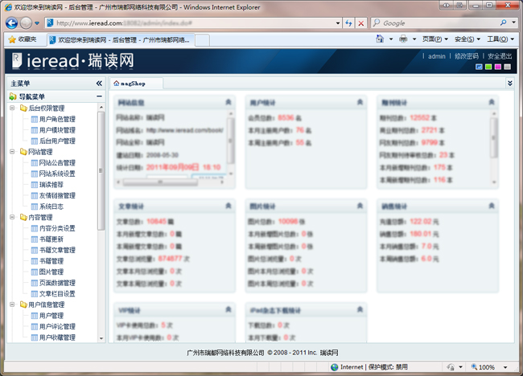

后台管理系统

后台管理系统
权限控制
- 校验邮箱：可以通过设置该开关，网站读者在进行注册时，用户是否必须通过校验邮件后才能完成注册。
- 必须登录：可以通过设置该开关，读者必须成功登录才能阅读设置为免费阅读的电子杂志内容。
- 免费阅读页数：可以通过该设置，读者可以免费预览付费内容的页数限制。
在线支付
- 支付宝：可以通过设置支付宝的支付信息，开通网站的支付宝支付功能。
- 财付通：可以通过设置财付通的支付信息，开通网站的财付通支付功能。
- 网银支付：可以通过‘支付宝’或‘财付通’，开通网站的网银支付功能。
VIP卡管理
在后台进行VIP卡的管理和发放。读者使用指定VIP卡的卡号和密码进行激活，将具有如下权限
- 包单月VIP卡：读者的帐号将具有一个月内免费阅读站内所有内容的权限。
- 包三月VIP卡：读者的帐号将具有三个月内免费阅读站内所有内容的权限。
- 包六月VIP卡：读者的帐号将具有六个月内免费阅读站内所有内容的权限。
- 包年VIP卡：读者的帐号将具有十二个月内免费阅读站内所有内容的权限。
- 贵宾VIP卡：读者的帐号将具有无限期免费阅读站内所有内容的权限。
电子杂志制作接口
- 独立进行电子杂志制作：可以购买电子杂志制作软件与电子杂志网站进行无缝对接，通过电子杂志制作软件进行制作后，直接进行电子杂志的后续管理工作。
- 租赁电子杂志制作服务：可以租赁瑞读网的电子杂志制作服务，通过内容更新接口将制作好的电子杂志内容更新到自己的电子杂志网站，进行电子杂志的后续管理工作。
网站接口
通过网站接口，可以将电子杂志网站与任意第三方网站平台进行以下功能的对接
- 跨站登录：可以在任一网站中进行登录后，可以实现跨站的登录。
- 租赁电子杂志制作服务：可以租赁瑞读网的电子杂志制作服务，通过内容更新接口将制作好的电子杂志内容更新到自己的电子杂志网站，进行电子杂志的后续管理工作。